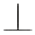
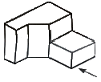
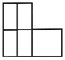
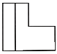
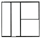
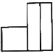
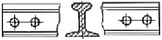
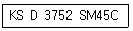

압연기능사 (2013-01-27 기출문제)
1과목: 금속재료일반
1. 자기 변태점이 없는 금속은?
- 철(Fe)
- 주석(Sn)
- 니켈(Ni)
- 코발트(Co)
(정답률: 78%)

2. 다음 중 탄소함유량(%)이 가장 많은 것은?
- 순철
- 공석강
- 아공석강
- 공정주철
(정답률: 74%)
3. 주로 철강용 부식액으로 사용되는 것은?
- 황산용액
- 질산용액
- 염화제이철 용액
- 질산알콜용액
(정답률: 62%)
4. 황동 중 60%Cu + 40%Zn 합금으로 조직이 α + β 이므로 상온에서 전연성은 낮으나 강도가 큰 합금은?
- 문쯔 메탈(Muntz metal)
- 두라나 메탈(Durana metal)
- 길딩 메탈(Gilding metal)
- 애드미럴티 메탈(Admiralty metal)
(정답률: 91%)
5. 구리에 대한 설명 중 틀린 것은?
- 비중은 약 8.9 이다.
- 용융점은 약 1083˚C 이다.
- 상온에서 체심입방격자이다.
- 전기 및 열의 양도체이다.
(정답률: 88%)
6. 주석 또는 납을 주성분으로 하는 베어링용 합금은?
- 우드메탈
- 화이트메탈
- 캐스팅메탈
- 옵셋메탈
(정답률: 86%)
7. Al-Cu-Si계 알루미늄 합금으로서 Si를 넣어 주조성을 개선하고 Cu를 넣어 절삭성을 좋게 한 주물용 Al합금을 무엇이라 하는가?
- 라우탈
- 실루민
- Y-합금
- 하이드로날륨
(정답률: 58%)
8. 다음 중 비중이 4.54, 용융점은 약 1670˚C, 비강도가 높고, 약 550˚C까지 고온 성질이 우수하며 내식성이 뛰어나 특히 산화물, 염화물매체에서 뿐만 아니라 모든 자연 환경에서 내식성이 양호한 금속은?
- 티탄(Ti)
- 주석(Sn)
- 납(Pb)
- 코발트(Co)
(정답률: 71%)
9. 전기강판에 요구되는 특성을 설명한 것 중 옳은 것은?
- 철손이 커야 한다.
- 포화자속밀도가 낮아야 한다.
- 자화에 의한 치수변화가 커야 한다.
- 박판을 적층하여 사용할 때 층간저항이 높아야 한다.
(정답률: 60%)
10. 주철의 성질을 설명한 것 중 옳은 것은?
- C 와 Si 등이 많을수록 비중이 높아진다.
- 흑연편이 클수록 자기 감응도가 나빠진다.
- C 와 Si 등이 많을수록 용융점은 높아진다.
- 강도와 경도는 크며, 충격 저항과 연성이 우수하다.
(정답률: 50%)
11. 강을 열처리하여 얻은 조직으로써 경도가 가장 높은 것은?
- 페라이트
- 펄라이트
- 마텐자이트
- 오스테나이트
(정답률: 72%)
12. 강을 그라인더로 연삭할 때 발생하는 불꽃의 색과 모양에 따라 탄소량과 특수 원소를 판별 할 수 있어 강의 종류를 간편하게 판정하는 시험법을 무엇이라고 하는가?
- 굽힘시험
- 마멸시험
- 불꽃시험
- 크리프시험
(정답률: 94%)
13. 다음의 현과 호에 대한 설명 중 옳은 것은?
- 호의 길이를 표시하는 치수선은 호에 평행인 직선으로 표시한다.
- 현의 길이를 표시하는 치수선은 그 현과 동심인 원호로 표시한다.
- 원호와 현을 구별해야 할 때에는 호의 치수숫자위에 ᑎ 표시를 한다.
- 원호로 구성되는 곡선의 치수는 원호의 반지름과 그 중심 또는 원호와의 접선 위치를 기입할 필요가 없다.
(정답률: 80%)
14. 제도에서 치수 기입법에 관한 설명으로 틀린 것은?
- 치수는 가급적 정면도에 기입한다.
- 치수는 계산할 필요가 없도록 기입해야 한다.
- 치수는 정면도, 평면도, 측면도에 골고루 기입한다.
- 2개의 투상도에 관계되는 치수는 가급적 투상도 사이에 기입한다.
(정답률: 82%)
15. 제도 용구 중 디바이더의 용도가 아닌 것은?
- 치수를 옮길 때 사용
- 원호를 그릴 때 사용
- 선을 같은 길이로 나눌 때 사용
- 도면을 축소하거나 확대한 치수로 복사할 때 사용
(정답률: 69%)
2과목: 금속제도
16. 대상물의 표면으로부터 임의로 채취한 각 부분에서의 표면거칠기를 나타내는 기호가 아닌 것은?
- Stp
- Sm
- Ry
- Ra
(정답률: 80%)
17. 축에 풀리 기어 등의 회전체를 고정시켜 축과 회전체가 미끄러지지 않고 회전을 정확하게 전달하는데 사용하는 기계 요소는?
- 키
- 핀
- 벨트
- 볼트
(정답률: 79%)
18. 반지름이 10㎜인 원을 표시하는 올바른 방법은?
- t10
- 10SR
- ø10
- R10
(정답률: 81%)
19. 가공에 의한 커터 줄무늬가 거의 여러 방향으로 교차일 때 나타내는 기호는?

(정답률: 75%)
20. 투상도 중에서 화살표 방향에서 본 정면도는?





(정답률: 91%)
21. 다음과 같은 물체의 형상을 쉽게 이해하기 위해 도시한 단면도는?

- 반 단면도
- 부분 단면도
- 계단 단면도
- 회전 단면도
(정답률: 71%)
22. 도면에서 가상선으로 사용되는 선의 명칭은?
- 파선
- 가는 실선
- 일점 쇄선
- 이점 쇄선
(정답률: 45%)
23. [보기]의 재료 기호의 표기에서 "45C" 부분이 의미하는 것은?

- 탄소 함유량을 의미한다.
- 제조 방법에 대한 수치 표시이다.
- 최저 인장강도가 45kgf/㎜2이다.
- 열처리 강도 45kgf/cm2를 표시한다.
(정답률: 89%)
24. 나사의 제도에서 수나사의 골 지름은 어떤 선으로 도시하는가?
- 굵은 실선
- 가는 실선
- 가는 1점 쇄선
- 가는 2점 쇄선
(정답률: 68%)
25. 워킹빔식 가열로에서 트랜스버스(transverse)실린더의 역할로 옳은 것은?
- 스키드를 지지해 준다.
- 운동 빔(beam)의 수평 왕복운동을 작동시킨다.
- 운동 빔(beam)의 수직 상하운동을 작동시킨다.
- 운동 빔(beam)의 냉각수를 작동시킨다.
(정답률: 82%)
26. 균열로 조업시 로압의 낮을 때의 현상으로 옳은 것은?
- 장입소재(강괴)의 상부만이 가열된다.
- 스케일의 생성 억제 억제 및 균일하게 가열된다.
- 화염이 뚜껑 및 내화물 사이로 흘러나와 노를 상하게 한다.
- 침입 공기 증가로 연료 효율의 저하 및 스케일의 성장과 버너 근처의 강괴의 과열 현상이 일어난다.
(정답률: 64%)
27. 냉간 압연시 연속 압연기에서 발생되는 제품의 표면 결함 중 롤 마크(Roll Mark)에 대하여 발생 스탠드를 찾을 때 가장 중점적으로 보아야 할 항목은?
- 촉감
- 피치
- 밝기
- 크기
(정답률: 79%)
28. 열간압연에서 모래형 스케일이 발생하는 원인이 아닌 것은?
- 작업 롤 피로에 의한 표면 거칠음에 의해 발생한다.
- 가열온도가 높을 때 Si함유량이 높은 강에서 발생한다.
- 사상 스탠드 간에서 생성한 압연 스케일이 치입 되는 경우 발생한다.
- 고온재가 배 껍질과 같이 표면이 거친 롤에 압연된 경우 발생한다.
(정답률: 60%)
29. 열간박판 완성압연 후 코일로 감기 전의폭이 넓은긴 대강의 명칭은?
- 슬래브(slab)
- 스켈프(skelp)
- 스트립(strip)
- 빌렛(billet)
(정답률: 57%)
30. 사이드 트리밍(side trimming)에 대한 설명 중 틀린 것은?
- 전단면과 파단면이 1:2인 경우가 가장 이상적이다.
- 판 두께가 커지면 나이프상하부의 오버랩량은 줄여야 한다.
- 판 두께가 커지면 나이프 상하부의 클리어런스를 줄여야 한다.
- 전단면이 너무 커지면 냉간압연시에 에지 균열이 발생하기 쉽다.
(정답률: 57%)
3과목: 압연기술
31. 롤의 몸통 길이 L은 지름 d에 대하여 어느 정도로 하는가?
- L = d
- L= (0.1 ~ 0.5)d
- L = (2 ~ 3)d
- L= (5 ~ 6)d
(정답률: 79%)
32. 다음 중 중립점에 대한 설명으로 옳은 것은?
- 롤의 원주속도가 압연재의 진행속도보다 빠르다.
- 롤의 원주속도가 압연재의 진행속도보다 느리다.
- 롤의 원주속도와 압연재의 진행속도가 같다.
- 압연재의 입구쪽 속도보다 출구쪽 속도가 빠르다.
(정답률: 81%)
33. 압연기의 구동 설비에 해당되지 않는 것은?
- 하우징
- 스핀들
- 감속기
- 피니언
(정답률: 78%)
34. 압연재의 입측 속도가 3.0m/sec, 작업 롤의 주속도가 4.0m/sec, 압연재의 출측 속도가 4.5m/sec일 때 선진율은?
- 12.5%
- 25.0%
- 33.3%
- 50.0%
(정답률: 54%)
35. 연속 풀림로에서 스트립의 온도가 가장 높은 구간은?
- 예열대
- 균열대
- 서냉대
- 가열대
(정답률: 87%)
36. 6단 압연기에 사용되는 중간 롤의 요구 특성을 설명한 것 중 틀린 것은?
- 내마모성이 우수해야 한다.
- 전동 피로 강도가 우수해야 한다.
- 작업 롤의 표면을 손상시키지 않아야 한다.
- 배럴부 표면에 소성 유동을 발생시켜야 한다.
(정답률: 79%)
37. 공형의 구성 요건에 관한 설명 중 옳은 것은?
- 능률은 높아야 하나 실수율은 낮을 것
- 치수 및 형상이 정확해야 하나 표면상태는 나쁠 것
- 압연시 재료의 흐름이 불균일해야 하며 작업이 쉬울 것
- 정해진 롤 강도, 압연 토크 및 롤 스페이스를 만족시킬 것
(정답률: 76%)
38. 냉연강판의 전해청정시 세정액으로 사용되지 않는 것은?
- 탄산나트륨
- 인산나트륨
- 수산화나트륨
- 올소규산나트륨
(정답률: 75%)
39. 열간압연과 냉간압연을 구분하는 기준이 되는 온도는?
- 소결온도
- 큐리온도
- 재결정온도
- 용융온도
(정답률: 85%)
40. 냉간압연기의 종류 중 리버스 밀(reversing mill)의 특징을 설명한 것 중 옳은 것은?
- 스탠드의 수가 3개 이상이다.
- 텐덤 밀에 비해 저속의 경우 사용한다.
- 소형 로트의 경우 사용한다.
- 스트립의 진행방향은 비가역식이다.
(정답률: 53%)
41. 열간 압연에서의 변형 저항 인자로 가장 거리가 먼 것은?
- 온도
- 변형속도
- 전후방 인장
- 압연재의 폭
(정답률: 55%)
42. 냉간 압연에서 압연유 사용 효과가 아닌 것은?
- 흡착 효과
- 냉각 효과
- 윤활 효과
- 압하 효과
(정답률: 61%)
43. 열간압연 공정을 순서대로 옳게 배열된 것은?
- 소재가열→사상압연→조압연→권취→냉각
- 소재가열→조압연→사상압연→냉각→권취
- 소재가열→냉각→조압연→권취→사상압연
- 소재가열→사상압연→권취→냉각→조압연
(정답률: 61%)
44. 열연 코일 제조공정에서 롤 크라운에 의한 제품 두께변동 중 바디 크라운(Body Crown)의 발생 원인은?
- 롤의 휨
- 슬래그의 편열
- 롤의 이상 마모
- 롤의 평행도 불량
(정답률: 65%)
45. 압연력을 줄이기 위한 효과적인 방법이 아닌 것은?
- 고온에서 압연한다.
- 지름이 큰 롤로 압연한다.
- 1회 압연당 압하량을 줄여 압연한다.
- 판재에 수평적인 인장력을 가해 압연한다.
(정답률: 54%)
4과목: 압연설비
46. 강편의 내부 결함이 아닌 것은?
- 파이프
- 공형 흠
- 성분편석
- 비금속개재물
(정답률: 50%)
47. 냉연강판의 평탄도 관리는 품질관리의 중요한 관리항목 중 하나이다. 평탄도가 양호하도록 조정하는 방법으로 적합하지 않는 것은?
- 롤 밴딩의 조절
- 압하 배분의 조절
- 압연 길이의 조절
- 압연 규격의 다양화
(정답률: 79%)
48. 공형의 종류 중 강괴 또는 강편의 단면을 조형에 필요한 치수까지 축소시키는 공형은?
- 연신공형
- 조형공형
- 사상공형
- 리더(Leader)공형
(정답률: 42%)
49. 중후판 압연에서 롤의 교체하는 이유로 가장 거리가 먼 것은?
- 작업 롤의 마멸이 있는 경우
- 롤 표면의 거침이 있는 경우
- 귀갑상의 열균열이 발생하는 경우
- 작업 소재의 재질 변경이 있는 경우
(정답률: 79%)
50. 1 패스로써 큰 압하율을 얻는 것으로 상, 하부 받침 롤러의 주변에 20~26개의 작은 작업 롤을 배치한 압연기는?
- 분괴 압연기
- 유성 압연기
- 2단식 압연기
- 열간 조압연기
(정답률: 81%)
51. 스핀들의 형식 중 기어 형식의 특징을 설명한 것으로 틀린 것은?
- 고 토크의 전달이 가능하다.
- 일반 냉간압연기 등에 사용된다.
- 경사각이 클 때 토크가 격감한다.
- 밀폐형 윤활로 고속회전이 가능하다.
(정답률: 45%)
52. 풀림의 설비를 크게 압축, 중앙, 출측 설비로 나눌 때 입측 설비에 해당하는 것은?
- 루프 카
- 벨트 래퍼
- 페이오프 릴
- 알칼리 스프레이 클리너
(정답률: 69%)
53. 열간 스카핑에 대한 설명 중 옳은 것은?
- 손질 깊이의 조정이 용이하지 않다.
- 산소 소비량이 냉간 스카핑에 비해 적다.
- 작업 속도가 느리고, 압연능률을 떨어뜨린다.
- 균일한 스카핑은 가능하나 평탄한 손질면을 얻을 수 없다.
(정답률: 75%)
54. 정정 라인(Line)의 기능 중 경미한 냉간압연에 의해 평탄도, 표면 및 기계적 성질을 개선하는 설비는?
- 산세 라인(Line)
- 시어 라인(Shear Line)
- 슬리터 라인(Slitter Line)
- 스킨패스 라인(Skin Pass Line)
(정답률: 77%)
55. 감전 재해 예방 대책을 설명한 것 중 틀린 것은?
- 전기 설비 점검을 철저히 한다.
- 이동전선은 지면에 배선한다.
- 설비의 필요한 부분은 보호 접지를 설치한다.
- 충전부가 노출된 부분에는 절연 방호구를 사용한다.
(정답률: 89%)
56. 윤활유의 작용에 해당 하지 않는 것은?
- 밀봉 작용
- 방수 작용
- 응력 분산 작용
- 발열 작용
(정답률: 81%)
57. 대형 열연압연기의 동력을 전달하는 스핀들(spindle)의 형식과 거리가 먼 것은?
- 기어 형식
- 슬리브 형식
- 플랜지 형석
- 유니버셜 형식
(정답률: 57%)
58. 사고 예방 대책의 기본 원리 5단계의 순서로 옳은 것은?
- 사실의 발견→분석평가→안전관리 조직→대책의 선정→시정책의 적용
- 사실의 발견→대책의 선정→분석평가→시정책의 적용→안전관리 조직
- 안전관리 조직→사실의 발견→분석평가→대책의 선정→시정책의 적용
- 안전관리 조직→분석평가→사실의 발견→시정책의 적용→대책의 선정
(정답률: 67%)
59. 권취 완료시점에 권취 소재 외경을 급냉시키고 권취기 내에서 가열된 코일을 냉각하기 위한 냉각 장치는?
- Track spray(트랙 스프레이)
- Side spray(사이드 스프레이)
- Vertical spray(버티칼 스프레이)
- Unit spray(유니트 스프레이)
(정답률: 79%)
60. 선재 공정에서 상부 롤의 직경이 하부 롤의 직경보다 큰 경우 그 이유는 무엇인가?
- 압연 소재가 상향되는 것을 방지하기 위하여
- 압연 소재가 하향되는 것을 방지하기 위하여
- 소재의 두께 정도를 향상시키기 위하여
- 롤의 원단위를 감소시키기 위하여
(정답률: 74%)